ПРИБОРЫ ДЛЯ ДИАГНОСТИКИ И ЧИП-ТЮНИНГА ЭСУД АВТОМОБИЛЕЙ ВАЗ, ГАЗ, УАЗ
Диагностические сканеры-тестеры
предназначены для диагностики электронной системы управления двигателем (ЭСУД) автомобилей ВАЗ, ГАЗ, УАЗ, в том числе ГАЗ-560 с дизельным двигателем Штайер(Steyr).
Они позволяют прочитать из контроллера параметры, паспортные данные, комплектацию системы и коды неисправностей, сбросить накопленные коды неисправностей, управлять механизмами и корректировать параметры ЭСУД.
st25-rp1.pdf (900 kbytes). Руководство по эксплуатации на приборы СТМ-2, СТМ-3, СТМ-4, СТМ-5).
|
|
|
СТМ-6—сканер-тестер для диагностики автомобилей ВАЗ, ГАЗ, УАЗ.
Это универсальный прибор для автономной и компьютерной диагностики, а также для чип-тюнинга инжекторных автомобилей. Он совмещает в себе функции приборов СТМ-5 и АПМ-3.
stm6_t.zip (180 Kbytes). Обложка к руководству пользователя на приборы СТМ-6 и АПМ-3.
stm6_rp.zip (740 Kbytes). Руководство пользователя на приборы СТМ-2 и АПМ-3.
stm6_p.zip (84 Kbytes) Паспорт на прибор СТМ-6.
|
|
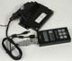
|
|
|
СТМ-5—сканер-тестер для диагностики автомобилей ВАЗ, ГАЗ, УАЗ.
st25_t.pdf (230 Kbytes). Обложка к руководству пользователя на приборы СТМ-2 и СТМ-5.
st25_rp.pdf (419 Kbytes). Руководство пользователя на приборы СТМ-2 и СТМ-5.
st5-p.pdf Паспорт на прибор СТМ-5.
|
|
|
Сканер-тестер СТМ-2 (выпускался с 1998 года) снят с производства в первом квартале 2006 года. В настоящее время его в продаже нет. Заказывайте его улучшенный аналог СТМ-5.
СТМ-2—сканер-тестер для диагностики автомобилей ВАЗ, ГАЗ, УАЗ.
st2-p.pdf (29 kbytes). Паспорт на прибор СТМ-2.
|
|
|
Сканеры-тестеры СТМ-3.1 и СТМ-3.2 (выпускались с 2001 года) сняты с производства во втором квартале 2006 года. Заказывайте их улучшенный аналог СТМ-5.
СТМ-3.1—сканер-тестер для диагностики автомобилей ГАЗ, УАЗ. Ориентирован на автосервис, специализирующийся на ремонте автомобилей ГАЗ и УАЗ.
st31-rp1.pdf (40 kbytes). Руководство по эксплуатации на прибор СТМ-3.1 (часть1).
st31-rp2.pdf (193 kbytes). Руководство по эксплуатации на прибор СТМ-3.1 (часть2).
СТМ-3.2—сканер-тестер для диагностики автомобилей ВАЗ. Ориентирован на автосервис, специализирующийсяна ремонте автомобилей ВАЗ.
st32-rp1.pdf (40 kbytes). Руководство по эксплуатации на прибор СТМ-3.2 (часть2).
st32-rp2.pdf (173 kbytes). Руководство по эксплуатации на прибор СТМ-3.2 (часть2).
st3-p.pdf (31 kbytes). Паспорт на прибор СТМ-3.
|
|
|
Сканер-тестер СТМ-4 (выпускался с 2001 года) снят с производства в первом квартале 2007 года. Заказывайте его улучшенный аналог СТМ-5.
СТМ-4—сканер ошибок автомобилей ВАЗ, ГАЗ, УАЗ. Позволяет небольшому автосервису с минимальными финансовыми затратами войти в рынок технического обслуживания и ремонта инжекторных автомобилей.
st4-rp1.pdf (41 kbytes). Руководство по эксплуатации на прибор СТМ-4 (часть1).
st4-rp2.pdf (126 kbytes). Руководство по эксплуатации на прибор СТМ-4 (часть2).
st4-p.pdf (27 kbytes). Паспорт на прибор СТМ-4.
|
Тестеры форсунок
предназначены для диагностики топливной системы инжекторных автомобилей.
Они позволяют провести баланс форсунок, промыть форсунки, оценить работоспособность новых форсунок без установки в автомобиль (в магазине), оценить статическую и динамическую производительность форсунок.
tfm.doc (50 kbytes). «Портативные тестеры форсунок впрыска бензина».
Тестеры форсунок могут использоваться в качестве управляющего элемента в проливочном стенде.
tfm3-rp.pdf (880 kbytes). Руководство по эксплуатации на прибор ТФМ-3. (Ульяновск, 2006 г.)
tfm-rp.pdf (880 kbytes). Руководство по эксплуатации на приборы ТФМ-1 и ТФМ-2. (Ульяновск, 2005 г.)
tf-p.pdf (27 kbytes). Паспорт на приборы ТФМ-1 и ТФМ-2.
|
|
|
ТФМ-3 позволяет контролировать давление в топливной магистрали (в комплекте с датчиком давления) и напряжение бортовой сети на любых режимах работы автомобиля, в том числе и в движении.
Быстродействие ТФМ-3 позволяет выявить кратковременные провалы (скачки) давления в топливной магистрали и напряжения бортовой сети.
Дополнительно в тестер ТФМ-3 включены функции сканера в части чтения паспортных данных, чтения и стирания ошибок, сброса адаптационных данных и управления исполнительными механизмами.
|
|
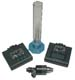
|
Тестер форсунок ТФМ-1 (выпускался с 2003 года) снят с производства в первом квартале 2007 года. Заказывайте его улучшенные аналоги ТФМ-2 и ТФМ-3.
ТФМ-1. В этом тестере отсутствует функция измерения давления топлива. Поэтому для проведения баланса форсунок требуется манометр.
|
|
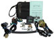
|
ТФМ-2 позволяет контролировать давление в топливной магистрали (в комплекте с датчиком давления) и напряжение бортовой сети на любых режимах работы автомобиля, в том числе и в движении.
Быстродействие ТФМ-2 позволяет выявить кратковременные провалы (скачки) давления в топливной магистрали и напряжения бортовой сети.
Методика промывки форсунок. Промывка форсунок проводится с применением тестера форсунок ТФМ-2 в комплекте с датчиком давления топлива.
tfm2.zip (6 kbytes). «Тестер форсунок ТФМ-2—анализатор топливных систем».
|
Тестер расхода воздуха
|
|
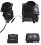
|
ТРВ-2 предназначен для оценки работоспособности датчиков массового расхода воздуха.
trv2-rp.pdf (694 kbytes). Руководство по эксплуатации на прибор ТРВ-2.
trv2.zip (8 kbytes). «Тестер датчиков массового расхода воздуха ТРВ-2.
|
Адаптер USB/K-line
|
|
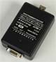
|
АПМ-3—универсальный адаптер USB/K-Line для компьютерной диагностики и чип-тюнинга инжекторных автомобилей.
Он представляет из себя микроконтроллерное устройство с программой диагностики ЭСУД автомобилей ВАЗ, УАЗ и ГАЗ по протоколу KWP2000 (ISO 14230).
apm3_t.pdf (900 Kbytes). Обложка к руководству пользователя на адаптер АПМ-3.
apm3_rp.pdf (2,5 Mbytes). Руководство пользователя на адаптер АПМ-3.
apm3_p.pdf (166 Kbytes) Паспорт на адаптер АПМ-3.
|
|
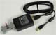
|
|
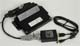
|
Адаптер RS-232/K-line
|
|
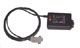
|
АПМ-1.1—универсальный адаптер RS-232/K-line для компьютерной диагностики и чип-тюнинга инжекторных автомобилей.
apm1-rp.pdf (900 kbytes). Инструкция по эксплуатации на адаптер АПМ-1.
Комплект для программирования автомобильных контроллеров типа ЯНВАРЬ-5, ЯНВАРЬ-7.2, Bosch M7.9.7, МИКАС-7, МИКАС-6, их модификаций и исполнений.
procon-1.zip (125 kbytes) Программа ПРОКОН-1. Работает с любым адаптером RS-232/K-line.
procon-p.pdf (30 kbytes). Паспорт на комплекс ПРОКОН-1.
|
|
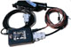
|
|
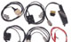
|
Сигнальная панель
|
|
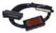
|
Сигнальная панель ПКП-1 (выпускалась с 2000 года) снята с производства в третьем квартале 2008 года.
ПКП-1 включается в разрыв цепей между контроллером и жгутом проводов ЭСУД и позволяет проконтролировать рабочее напряжение на выводах контроллера и электронных компонентах системы управления двигателем, не снимая их с автомобиля.
pkp1-p.pdf (26 kbytes). Паспорт на панель ПКП-1.
|
|
диагностические кабели, кабели программатора, топливные штуцеры и т. д.
|
|